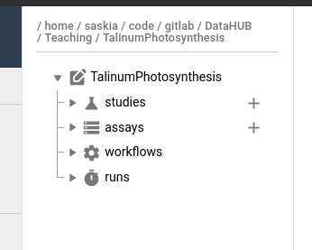
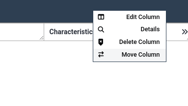
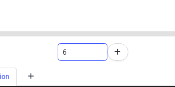
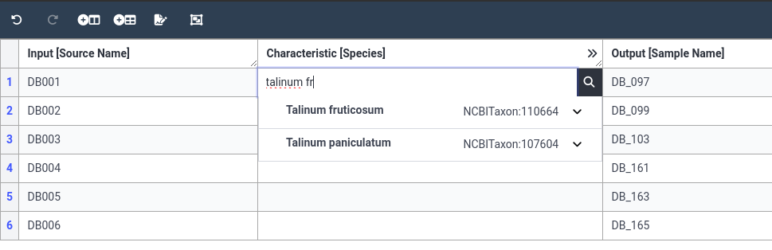
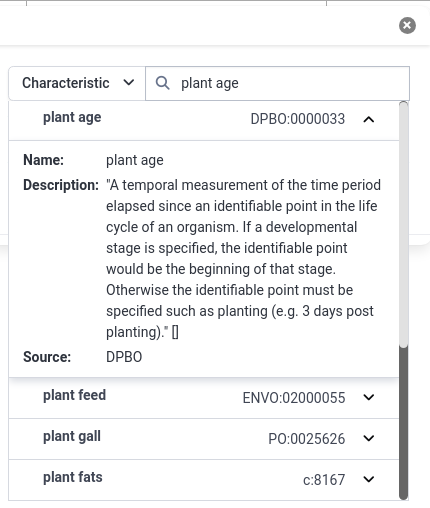
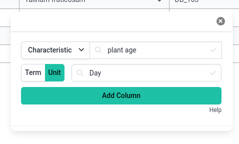
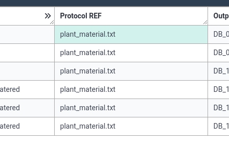
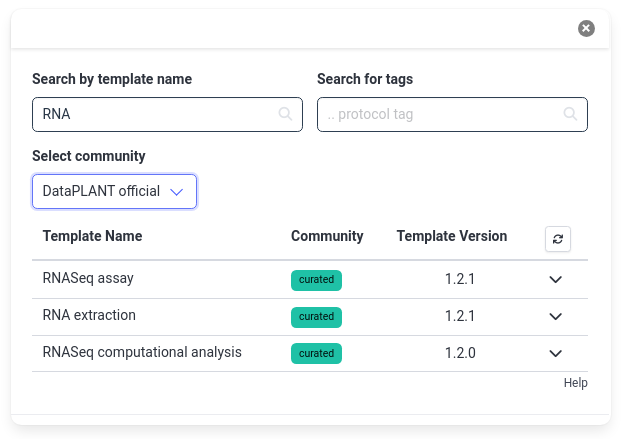
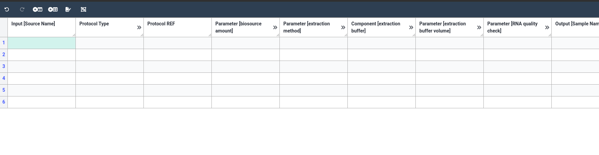
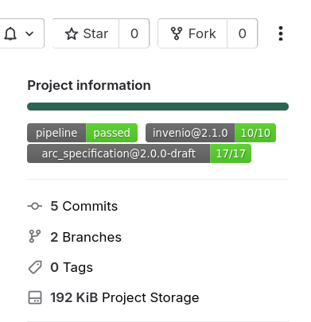

DataPLANT ARCs
OverviewQuestions:
Objectives:
What are ARCs?
Why should I create ARCs?
How can I create my ARC?
Requirements:
Time estimation: 2 hoursSupporting Materials:Published: Oct 22, 2024Last modification: Oct 22, 2024License: Tutorial Content is licensed under Creative Commons Attribution 4.0 International License. The GTN Framework is licensed under MITversion Revision: 2
In this tutorial we will guide you through the process of creating your ARC (Annotated Research Context) ARCs are a part of your Research Data Management (RDM) strategy, and are aimed specifically at plant research data. ARCs are an RO-crates implementation developed by DataPLANT (NFDI4Plants). ARCs allow you to bundle and annotate your research data in a standardized and FAIR (Findable, Accessible, Interoperable, Reusable) manner.

AgendaIn this tutorial, we will cover:
Getting set up for the tutorial
For this tutorial you need three things:
Below we will walk you through each of these 3 setup steps.
Create a DataHUB account
DataHUB is a GitLab instance designed to hosts ARCs. Here you can work collaboratively to create your ARC, and once you are ready to publish your ARC, you can do this from here as well.
Hands-on: Create a DataHUB account
- Already have an account? Please log in
- New to DataHUB? Create an account: https://git.nfdi4plants.org/
- If you are not familiar with Git or GitLab that is ok, ARCitect will take care of syncing to DataHub behind the scenes
Download demo data
In this tutorial we will create an ARC for an example research data. In this example investigation we grew Talinum plants under drought conditions, with watered plants as control. Under these conditions the plants switch their type of photosynthesis (water: C3, drought: CAM). To study this change, we profiled gene expression (Transcriptomics) using RNASeq, and metabolites (Metabolomics) via GC-MS (Gas-Chromatography Mass Spectrometry)
Hands-on: Download example ARC data
Download the zip file from Zenodo (<2MB) to your machine
https://zenodo.org/records/13970369/files/GTN_ARC_tutorial_data.zip- Unzip the file
- You can put the files wherever is most convenient for you
- Have a quick look at the files and folders
- This example data mimics how you might have your project data organised on your computer
- In the next part we will show how to organise this data in an ARC-compatible way
Install ARCitect
Now we will install the ARCitect tool. This tool will help you create and fill your ARC.
Hands-on: Install the ARCitect tool on Linux
- Follow the installation instructions on the DataPLANT knowledgebase for your OS:
Comment: ARCitect versionThis tutorial uses version 0.48 of ARCitect. Since this tool is still under rapid development, a newer version of ARCitect may already be available. Feel free to install the latest version of ARCitect, but be aware that some screenshots and instructions may be outdated.
Start ARCitect to verify that everything is installed correctly. You should see a screen like this:

Initialize your ARC structure
Now that you have everything set up for the course, we can start creating our ARC. First we will organize our example data into the ARC structure, then we will add structured metadata describing our experiments and data.
The ISA data model
ARCs build on the ISA Abstract Model for metadata annotation.
The ISA model comes with a hierarchy (ISA: Investigation - Study - Assay) that aligns well with most projects in (plant) biology labs. It allows grouping multiple assays (measurements) to one study, and multiple studies to one investigation.
Your ARC has one isa.investigation.xlsx workbook at its root, where metadata about the investigataion is captured. Similarly, each study or assay that you add to your ARC contains one isa.study.xlsx or isa.assay.xlsx, respectively.
Comment: Before you startBefore creating your own ARC, invest some time to think about the following questions.
- What is my investigation?
- What is my study?
- Which assay did I perform?
- What is my (raw) dataset?
- What protocols did I use?
The ARCitect interface
The ARCitect window consists of 4 main parts; on the left is the menu panel, next to it is a panel displaying the ARC folder structure, then the main panel where we will configure our ARC, and on the righ is (optionally) a help panel.
Lets have a closer look at the menu panel:
This menu bar allows you to:
- Login: Log in to DataHUB (required to sync your ARC to DataHUB)
- New ARC: Create a new ARC
- Open ARC: Open an existing ARC from your machine
- download-cloud Download ARC: From DataHUB to your machine (e.g. from a colleague or published)
- save Save ARC: Save your changes to your machine
- Explorer: Open the local ARC folder on your computer
- Commit: prepare your ARC changes for sync to DataHUB
- DataHUB sync: push your comitted changes to DataHUB
- History: Show previous versions of your ARC
- Validation: Configure validation (checks) for our ARC
- Services: Check on the status of ARC services (e.g. is DataHUB down for maintenance?)
- Settings: For example turn on tool tips or the help panel
Creating a new ARC
Lets start by creating a new ARC.
Hands-on: Create a new ARC in ARCitect
- In the left-hand panel of ARCitect, select New ARC
- Navigate to a location on your machine where you would like to create the ARC folder
- Choose a descriptive name for your ARC, e.g.
TalinumPhotosynthesisComment: What's in a name?By default, the name give your ARC here will be used for:
- the ARC folder on your machine
- the ARC repository on DataHUB at
https://git.nfdi4plants.org/<YourUserName>/<YourARC>(see next steps)- the identifier for your investigation
Note: Make sure that no ARC exists at
https://git.nfdi4plants.org/<YourUserName>/<YourARC>. Otherwise you will sync to that ARC.If all went well, you should see the folder structure that was created for your ARC: 
- Click on the Explorer button in the menu to see the files created on your machine
The basic ARC structure is initialized for you, and looks something like this:
my-arc
studies
study1 # subfolder for each study
protocols # folder for protocol documents
resources # folder for any other supporting information and files
isa.study.xlsx # study-level metadata (e.g. sample sheet, culturing/harvesting conditions)
README.md # Free-text description of your study
assay2
...
assays
assay1 # subfolder for each assay
dataset # assay result files (e.g. sequencing files)
protocols # assay protocol files
isa.assay.xlsx # assay-level metadata (e.g. instrument)
README.md
assay2
...
runs # analysis results
...
workflows # analysis workflows (CWL, or any other scripts/code used)
...
isa.investigation.xlsx # investigation-level metadata
README.md
Add investigation-level metadata
We will start by adding some basic data about our ARC. We do this in the investigation-level metadata.
Hands-on: Adding investigation information
- In the ARC folder panel (second panel from the left), click on the investigation
- This is the root of the ARC folder structure (e.g. TalinumPhotosynthesis)
- This will bring up the investigation information in the main panel
- Notice that the Identifier has already been filled in for you (but you can still change it)
- Behind the scenes this information will be saved as an Excel sheet
isa.investigation.xlsx- Add a title for your investigation
- This should be a concise but descriptive title
- Tip: think of what you would name your publication based on this investigation
- For this tutorial, you could set your title to
Effect of Drought on Talinum Photosynthesis- Add a description for your investigation
- Here you can describe your main research questions and methods in a few sentences or paragraphs.
- Tip: think of this as a short abstract like you would provide in a publication
- For this tutorial you can add any text here
- Add an ARC Contact (you)
- Click on the plus (plus) icon under Contacts
- Click on the dropdown (dropdown) icon on the right of the contact to expand it
- Fill in at least your First name, Last name, and email.
- Tip: if you have an ORCiD ID, fill that in and hit Search to autofill these fields
Your investigation tab should look something like this

Saving your ARC
It is a good idea to frequently save your work. There are 2 levels of saving your ARC; you can:
- Save it locally (to your computer)
- Save it online to DataHUB (syncing)
By default your ARC on DataHUB is private to you, but you have the option of sharing it with your collaborators.
Comment: Why and how often to sync to DataHUB?Syncing your ARC to DataHUB frequently has several advantages:
- It makes it easy to collaborate with colleagues on your ARC
- It is a backup of your ARC in case anything happens to your computer
- It is version controlled. This means you can always go back to any previous version your ARC if needed
We advise you to save your ARC to your local machine as often as you can, and sync to DataHUB every time you have completed a unit of work (e.g. added data files, added culturing metadata, added protocol documents etc), this makes it easy for others (and future you) to see what you have changed.
Since we have just completed our first unit of work (initialized our ARC and added basic investigation metadata), lets save and sync our ARC to DataHUB now.
Hands-on: Save and Sync our ARC
- Save locally simply by hitting the Save ARC button on the left
- Thats it! Too easy!
- Do this as often as possible to avoid losing work
- Click Login at the top of the menu panel
- Select
git.nfdi4plant.orgas your host- Click the Login button
- Since you already logged into DataHub via your browser earlier, ARCitect should now automatically log you in
To check that you are successfully logged in, the Login button should now be replace with your DataHub username
- Click on Commit in the menu
- This screen will show you all files that have chanced since your last sync
- You can choose whether to sync all files, or only some
- Choosing which files to sync is called committing those file.
- In our case only one file has changed,
isa.investigation.xlsx. By default it is already selected to be committed- Add a commit message
- in a few words, describe your changes
- this will help you and your colleagues
- For example, for this changes you can write
added investigation metadata- You can leave the rest of the fields to the default values
- Click the Commit button
- There will be a confirmation screen like the one below
- Click the Ok button
Click on DataHUB Sync in the menu
- Click on + (plus) to add a remote (DataHUB location to save your ARC)
- you only have to do this once
- you can keep all the default settings
- Click Add
- Click Push to sync from your computer to DataHUB
- Pull will do the reverse, it will pull in changes from DataHUB into your local copy of the ARC, for example if a collaborator made changes, or you worked on it from a different machine.
- Check that the push was successfull
- Navigate to
https://git.nfdi4plants.org/YourUsername/TalinumPhotosynthesis- Replace YourUsername with your DataHUB username in the URL
- If you used a different Identifier for your ARC, replace TalinumPhotosynthesis with your ARC Identifier in the URL
- You should see your ARC on DataHUB:


Congrats! You have initialized, saved, and synced your ARC! Now lets continue with the good part, actually filling your ARC.
Structure your data in the ARC
Think about your data
Next we will divide our research into studies and assays. As a rule of thumb, create a study for every research question, and an assay for every measurement you performed (e.g. sequencing, mass-spec, imaging). An investigation can have one study, or several. A study can have one or more assays, and each assay can be associated with one or more studies.
Hands-on: Evaluate the example data
Recall our example research:
In this example investigation we grew Talinum plants under drought conditions, with watered plants as control. Under these conditions the plants switch their type of photosynthesis (water: C3, drought: CAM). To study this change, we profiled gene expression (Transciptomics) using RNASeq, and metabolites (Metabolomics) via GC-MS (Gas-Chromatography Mass Spectrometry)
Have a look at the demo data we downloaded
Question: Which studies and assays do we have?
- Which studies do we have?
- Which assays did we perform?
- We had one research question, the effect of drought on photosynthesis, so we will create 1 study
- We performed 2 measurements, RNA sequencing and GC-MS, so we will create 2 assays in our ARC
Create a study
Lets create our study now.
Hands-on: Create an ARC study
- Click on the plus (plus) icon next to the studies folder
- Provide a study identifier, e.g.
talinum_drought- Click plus New Study button to confirm
- Expand the new study folder that was created in your ARC
- you should see the protocols and resources folders created


As we did for the investigation, we can also add some basic study information
Hands-on: Add basic study metadata
- Click on your study
talinum_droughtThe main panel will now show study metadata, here you can add basic information about your study such as description, contacts, associated publications.
- Add a description for the study
- Add yourself as a contact
- Remember that you can use your ORCiD ID for a fast way to fill this data
- Add a publication
- Normally you would add the paper you published based on the data in this ARC
- For this tutorial, add any publication (e.g. one of yours, or one you find interesting)
- The easiest way to do this, is to add the DOI link or Pubmed ID, then the information will be autofilled
- If you dont have a publication in mind, try one of the following papers:
- Pubmed ID:
7825135- DOI:
https://doi.org/10.1136/bmj.331.7531.1498


Since we have once again completed a unit of work, lets save and sync our ARC again!
Hands-on: Save & Sync
- Save your ARC locally
- Save ARC button in menu
- Sync your ARC to DataHUB
- DataHub Sync button in menu
- Commit all changed files
- Provide a good commit message (e.g.
added drought study)
Create an assay
Next, we will create our 2 assays. Recall that we performed two measurements/assays, RNA sequencing, and metabolomics.
Hands-on: Create the RNA-seq assay
- Click on the plus (plus) icon next to the assays folder
- Give your assay a name, e.g.
rnaseq- In measurement type field, choose
mRNA Sequencing
- this field is ontology based
- as soon as you start typing, suggetions for known terms will pop up
- Notice the TSR and TAN fields are automatically filled in once you select a term. These fields help make your ARC machine readable.
Similarly, set the Technology Type to
Next-generation SequencingQuestionLook through our demo data, can you find out which sequencing machine was used?
In the example data, weve got a methods folder where weve stored notes on our assays, In the file called illumina_libraries we see that the sequencer we used was a
Illumina HiSeq 2000Under Technology platform, fill in
Illumina HiSeq 2000

Awesome, now lets repeat the process for our metabolomics assay.
Hands-on: Create the metabolomics assay
- Create a new assay called
metabolomics- Under measurement type choose
Gas Chromatography Mass Spectrometry- We can leave the Technology type/platform fields empty for now

And once again, lets save our ARC and sync it to DataHUB.
Hands-on: Save & Sync
- Save your ARC locally
- Save ARC button in menu
- Sync your ARC to DataHUB
- DataHub Sync button in menu
- Commit all changed files
- Provide a good commit message (e.g.
added rnaseq and metabolomics assays)
Adding files to your ARC
As our next step, lets add the files we have in our demo folder to our ARC.
Add protocol documents
Hands-on: Adding protocols
- Open the folder with demo data on your computer
- Look through the methods folder
- This contains files with notes about methods we used in our research
- In our ARC, these usually go in protocols folders
- Studies and assays both have protocols folders
QuestionWhere should each of the 4 files in the methods folder go in our ARC?
plant_material.txt: contains a general sample sheet, and should go in the study-level protocol folderRNA_extraction.txtandIllumina_libraries.txtare specific to the RNA sequencing assay, so should go in the protocols folder for the rnaseq assaymetabolite_extraction.txtis specific to our metabolomics assay, so should go in the metabolomics protocol folderThere are two ways to add files to your ARC, we will do both now, in the future you can choose whichever option you prefer
- Adding files via ARCitect
- Expand the
studiesfolder- Expand the
talinum_droughtfolder- Right-click on the
protocolsfolder- Choose
Import filesoption- Browse to the demo data and choose the
methods/plant_material.txtfile
- Adding files via file explorer
- Click on
Explorerin the left-hand menu- Open the
assays/metabolomics/protocolsfolder of your ARC- In another window, open the demo data folder
- Copy or drag the
metabolite_extraction.txtfile from the demo data folder to your ARC folder- Add the two remaining protocol files to the ARC in your preferred way
- Files
illumina_libraries.txtandRNA_extraction.txt- Both should go to
assays/rnaseq/protocols/folder in your ARC

Note that adding files via ARCitect import option will create a copy of the file, rather than moving it, so if you have large data files you might want to move the files via the explorer option.
Add assay files
Next, lets add the RNA-seq data we have to the ARC structure.
Hands-on: Add RNA-seq data
- Look in the
rnaseq_datafolder of the demo data
- Files with the
.fastq.gzsuffix are raw sequencing files- Raw data goes in the
assays/rnaseq/dataset/folderNGS_samplesheet.xlsxcan go into the assays protocol folderMove the files to the ARC in your preferred way

Finally, lets do the same for our metabolomics data
Hands-on: Add Metabolomics data
- Look in the
metabolomics_datafolder of the demo data
- Folders with the
.Dsuffix are raw data files- The rest of the files can go to the protocols folder
- Move all the files to the ARC metabolomics assay folder
- Note that if you move them via ARCitect, you should use the Import Directories option for the raw data folders
Congrats! you have added data to your ARC! As always, lets make sure to save & sync our work before we continue.
Hands-on: Save & Sync
- Save your ARC locally
- Sync your ARC to DataHUB
- Provide a good commit message (e.g.
added protocols and raw data files)
Add your experimental metadata (SWATE)
Now that we have all our data in the ARC, we need to add metadata about our research in a structured way. We already put a lot of information about our samples and experiments in the protocols folders, but these are just free-text notes, like we would put in a methods section of a paper, or in our lab notebook. The information is there but it is not structured yet.
In this section, we will show you how you can add structured metadata to your ARC. We do this by using a standard format (isa-tab), combined with ontology-based annotations. We call these annotation tables, and these tables with metadata can be created directly within the ARCitect tool.
Comment: SWATEIf you have previously already looked into ARCs, you may remember a tool called SWATE. SWATE helps you create these annotation tables. SWATE has now been integreted into ARCitect
Add sample information to the study metadata
First, we will add information about our samples (plants) to our study.
We took some notes about our samples in plant_material.txt file (now in our protocols folder)
Plant Material and Growth Conditions
Plants:
- Species: Talinum fruticosum
- Age: 28-d-old
Growth Chamber
- 12 h light (30C, 37% relative humidity)/12 h dark (22C)
- 425 Einstein
Drought treatment:
- no water for 12 days
- re-water for 2 days
Sampling:
- Leaves: topmost mature unshaded leaves, ca. 34.5 cm (see pictures)
- shock-frozen in liquid N2
drought samples (CAM)
- DB_097
- DB_099
- DB_103
re-watered samples (C3)
DB_161
DB_163
DB_165
Text files that we added to our ARC, can also be viewed and edited from within ARCitect
- Expand the talinum_drought study
- Expand the protocols folder
Click on the
plant_material.txtfile- From this screen you can edit the text as needed.
- text files support Markdown syntax
The ISA-Tab format
We will now take this free-text description of our samples, and turn them into a structured annotation table using ARCitect.
At its core, an annotation table often looks like:
| Source Name | .. | .. | Sample Name |
|---|---|---|---|
| plant 1 | .. | .. | sample1 |
| plant 1 | sample2 | ||
| plant 2 | sample3 | ||
The Source Name column and lists the sources (plants) you used in your experiments. The final column, Sample Name describes the samples derived from the sources (plants). Then there can be any number of columns in between describing characteristics of the plants (e.g. species, location, conditions, etc). Which columns appear here depends on your experimental setup, and can be chosen by you.
These sample names you provide here can be referenced in other annotation tables in the study, or in assay-level annotation tables. ARCitect uses these sample identifiers to put information from different annotation tables together, so make sure you use consistent spelling and capitalization.
Create an annotation table from scratch
There are 2 ways to add annotation tables, you can either:
- build them up by hand, choosing the columns (Building Blocks) yourself.
- use a pre-defined template. These templates are either provided by the DataPLANT core team, or by other communities that use ARCs (or you!).
We will show both ways of adding annotation tables in this section of the tutorial.
First, lets add our sample information as an annotation table the manual way. Since this information pertains to the study as a whole, not just a single assay, we will add our sample sheet information at the study level.
Hands-on: Initialize smple information annotation table
- Click on your study name in the ARC structure
- This should bring up the study metadata we filled in previously
- At the bottom of the main panel, click on the plus (plus) icon
- the icon is located next to the current tab named Metadata
- You should then see a new tab named NewTable0 appear
- Rename the table to Sample Information
- by right-clicking on the tab name NewTable0
In the center panel, choose Or start from Scratch!
- We fill first add our Source Name column
- In the dropdown, select Input
- Next select Source Name
- Click Add Column
- Next, add an output column Sample Name
- Click on Add building block icon at the top of the table
- In the dropdown, select Output
- Next select Sample Name
- Click Add Column
- Lets add a column for the species as well
- Click on the Add building block button
- Change the dropdown to Characteristic
- In the search bar next to it, type Species
- Select the NCIT ontology term
- The column probably appear on the right
- It is customary to keep the output column on the right
- Right-click on the species column
- Select Move column 
- Change the column to
1- Click Apply to get a preview of the new order
- Click Submit to apply the change
- You should now have 3 columns, with species column in the middle
- To add data, we have to add rows
- We had 6 samples, so we will add 6 rows
- At the bottom, change the 1 to a 6, and click on the plus (plus) button to add the rows 
- You should now have 6 rows in your table


Now that we have our basic table initialized, lets start adding some data. For our example study, we grew 6 plants
(we will label them DB001 to DB006). We grew 3 plants in drought conditions, and 3 controls. From our sample_information.txt
file we see that the samples we derived from these plants had IDs DB_097, DB_099, DB_103 (drought/CAM), and DB_161, DB_163, DB_165
(controls/re-watered/C3). All plants are species Talinum fruticosum.
Lets fill all this information in our annotation table.
Hands-on: Fill the annotation table
- Fill the first column (Source Name) with our 6 plant names
DB001 DB002 DB003 DB004 DB005 DB006You can copy the values one by one, but you can also copy the whole column at once.
- Copy the IDs above
- In your ARC table, Select the first cell of the Source Name column
- Hold down the shift key
- Select the last (6th) cell of your column
- Paste the IDs (
CTRL+V)- Fill the last column (Sample Name) with our 6 sample names
DB_097 DB_099 DB_103 DB_161 DB_163 DB_165- Now we will fill in the Species column
- Select the first cell in the Species column
- Start typing the species name
Talinum fruticosum- Since this is an ontology column, you will get suggestions as you type.
- In our case, we see NCBI ontology term for our species, please select this value. 
- Copy the species value to the enitre column
- Right-click on the species term you just added in the firs row
- Select Fill column to apply this term to all 6 rows.

This is the basic process of building our annotation table. We can now add more building blocks (columns) as needed, for all the information we have about our plants that we wish to describe. In the next section, we will add more columns.
But first, lets have a closer look at our annotation table.
Comment: Why do we call them Building Blocks?
- Click on the (expand) icon next to the species column name
- You will now see additional hidden columns
- These columns provide information about the ontology term you chose (TSR and TAN)
- There is also a hidden unit column. (For species this column is unused)
This is why we use the term Building Block instead of column; behind the scenes there are actually more columns. We hide these columns in ARCitect, because most of the time these columns are not so interesting to humans, but they are what makes your ARC machine-readable.
This machine readability is essential for example for ARC searching tools so that you can perform advanced searches such as Find all ARCs with data of Talinum Fruticosum that performed an RNA-seq assay and facilitate re-use of data. This will help people find your research, and will help you find data for your next study.

Lets add some more building blocks for other information we have about our plants. Based on our methods document, we know a few more characteristics of our plants:
- Light intensity of 425 Einstein
- Plant age of 28 days
- Watering exposure of 12 days drought (for 3 of the samples) or 12 days drought followed by 2 days rewatering (for the other 3 samples)
Notice that the first two of these characteristics include a value (425, 28) and a unit (Einstein, days). In the next step we will show you how to deal with units in ARCitect
Hands-on: Add building blocks with units
- Add a new building block for plant age
- Select Characteristic from the dropdown
- Type Plant Age
- Select the DPBO term Plant age
- In the results, you can always click on the dropdown (dropdown) icon to get more information about the term 
- Before you add the column to the table, you can also set the unit for the column
- Click the button labelled Unit
- Search for Day
- Find an ontology term with a good description 
- Click Add Column
- Notice that the column is now already filled with the unit
- The column will appear to the right of the column you were last on
- If you want your column in a different place, move it now in the same way we did before (right click the column)
- Add the value 28 to the age column for all 6 samples
- You can see that your chosen unit is automatically added to the value you provide in the cell
- remember, you can fill in one cell, then use the Fill Column option from the right-click menu to apply the same value to all rows.

Comment: Characteristic vs Factor vs Parameter vs ComponentWhen adding building blocks, you may have noticed that a distinction is made between characteristic, parameter, factor and component. But when to use which?
Have a look at this Annotation Principles Guide For a more precise description, but in short:
- Characteristics columns describe inherent properties of the source material, e.g., a certain strain or ecotype, but also the temperature an organism was exposed to.
- Factor columns describe independent variables that determine the specific output of your experiment when process and analysis were identical. Most of the time, Factors are the most important building blocks for downstream computational analysis.
- Parameter columns describe steps in your experimental workflow, e.g., the temperature or extraction buffer used for your assay. Multiple Parameter columns form a protocol.
- Component columns are used to list anything physical of a protocol, e.g. instrument names, software names, or reagents names.
Keeping this in mind, lets add more building blocks
Hands-on: Add more buiding blocks
- Add a building block for light intensity exposure (PECO:0007224)
- Add it as a Parameter column
- Set the unit to microeinstein per square meter per second (UO:0000160)
- Fill the column with a value of 425 for all samples
- Add a building block for Watering exposure (PECO:0007383)
- Add it as Factor column
- set the value to 12 days drought for the drought samples (
DB_097,DB_099,DB_103)- set the value to 12 days drought + 2 days rewatered* for the other 3 samples
As a final step, we can associate our protocol document (plant_material.txt) with our annotation table.
Hands-on: Add more buiding blocks
- Add a new building block
- Add it as a ProtocolREF column (under More)
- Click Add column
- For the value, set the file name
plant_material.txtfor all columns
- ARCitect will know to look in the protocols folder for this file 
Well done! You have added your first annotation table! You can add as many columns as you need in your annotation tables. The aim is always to capture as much information as you can in this way.
While we succeeded in creating our annotation table, it was quite a bit of work adding in our building blocks one by one. Luckily, there are a lot of templates available that can make your life easier! In the next section, we will show you how to do this.
Add assay annotation
Building annotation tables from scratch can be a bit time consuming, especially if we have to repeat it for every ARC we create Therefore, DataPLANT has also a way to share templates for annotation tables. For example, the metadata for RNA sequencing will be very similar for everybody. So instead of creating this annoation table from scratch, we can load a pre-existing template. This is just a starting point, we can still add and remove building blocks as needed, but it will save us a lot of time.
Create RNA-Seq assay annotation tables from template
Hands-on
- Click on the RNA-seq assay in your ARC
- Add a new annotation table
- plus (plus) icon at the bottom
- Rename the table to a better name
- e.g. RNA extraction
- Choose Start from an existing template! in the center of the screen
- Search for RNA
- The results will show a few options from the official DataPLANT templates
- You can also search other community templates by changing the Select community dropdown to All (or a specific community) 
- Choose the RNASeq extraction template
- Click Select to confirm
- This will give you a preview of the building blocks in the template
- Click Add template
- Add 6 rows to the table 
- Try to add RNA extraction information to this table
- Open the
RNA_extraction.txtfile in your protocols folder to view the information to add.Question
- How does your final annotation table look?
- The biosource amount column does not have a unit set yet. To do so now, please:
- Search for milligram in the column
- Right-click on the term, and select
as unit cell.- Choose Fill column from the right-click menu to apply this to all rows
- Set the unit for buffer volume column to microliter in the same way
Below are screenshots of a filled annotation table. Note that there are often multiple ways to fill an ARC.

As always, lets save and sync our ARC
Hands-on: Save & Sync
- Save your ARC locally
- Sync your ARC to DataHUB
- Provide a good commit message
Adding computational workflows to your ARC
We have now added raw data, protocols, and annotation tables to our ARC. We can publish this Data ARC as-is, but ARCs can also support addition of analysis workflows and results.
ARCs offer integrations for CWL (Common Workflow Language) workflows, but this is out of scope for this tutorial. You can read more about adding CWL workflows to your ARC in the DataPLANT knowledgebase
If you do not have CWL workflows, you can put any other scripts or code you used in the workflows folder, and
any analysis results in the runs folder. This will not be structured or statndardized, but better than nothing.
Publishing your ARC
Once you have finished your ARC, you can choose to publish it. It will then become public for anybody to find and re-use. Before you can do this, your ARC must pass some basic validation. This process checks if your ARC is in valid ARC format, and if any files you reference are really included, etc.
ARC validation
By default, the basic ARC validation is enabled in DataHUB
Hands-on
- Open your ARC repository on DataHUB. Tip: a quick way to get there is
- click on DataHUB sync in the ARCitect menu
- click on the globe icon to open the DataHUB repository in the browser
On the right of your DataHUB ARC repository, you should see a badge labelled pipeline with either a green passed label or a red failed label
- You can click on this badge to get more information about the tests
- you can also click on the green checkmark or red cross next to your latest commit see validation pipeline details
- if your tests are failing, this can give you more information about what is wrong
- if it is green, you usually dont need to look at the test details.
- We will cover testing in more detail in a different tutorial, for now, just know that it exists.
This test performs some basic checks, but in order to publish our ARC, we need additional validation. This is not enabled by default.
Enabling Invenio testing
Publishing of ARCs uses Invenio. Before you can publish your ARC, we must enable the Invenio validation package.
Hands-on: Invenio Validation
- Click on Validation in the ARCitect menu panel
- Under Custom Validation Packages, select Invenio
- Click Save
- Sync the change to DataHUB
- Remember to commit first
- Open your ARC repository on DataHUB again
- You should see additional badges
- Note that it may take a few minutes for these badges to show up 

Publishing Process
Once all of the test pass, you can start the submission process for publishing your ARC.
Hands-on
- Open your ARC repository on DataHUB
- Click on the invenio testing badge
- This can only be done if the badge is green
- This will open a screen where you can preview the basic ARC information
- We will not publish this training ARC, but for your real ARC you would now check the boxes to agree to the terms, and then hit the Publish button.

{kind=link}
{kind=link}
{kind=link}
{kind=link}
{kind=link}
{kind=link}
{kind=link}
{kind=link}
{kind=link}
{kind=link}
{kind=link}
{kind=link}
{kind=link}
{kind=link}
{kind=link}
{kind=link}
{kind=link}
{kind=link}
{kind=link}
{kind=link}
{kind=link}
Where is your ARC published to?
After publishing, your ARC will be public, and automatically included in several locations.
ARChive
The DataPLANT ARChive will list all published ARCs
For example this ARC

You see this looks a bit like a publication. Notice the DOI on the right. Every ARC will receive a DOI. You can use this DOI in your publication to point readers to your ARC.
Comment: Updating a published ARCNote that you can still update your ARC after publishing, and you can publish a newer version. You will receive a new DOI for the updated ARC, and the original version of your ARC will remain accessible with the original DOI.
ARC Registry
The ARC registry is another place where your ARC will be listed. The ARC registry can search across different institutions DataHUBs, and supports advanced searching of ARC metadata.
{kind=link}
Many of these ARC searching and aggregation portals are still under active development, and may change/improve a lot in the coming years.
Next steps on your ARCification journey
You should now know the basics needed to create an ARC for your own data using the ARCitect tool.
For support during the process of creating an ARC for your own project(s), have a look at:
Conclusions
Congrats! You have now created your first ARC using ARCitect, you synced it to DataHUB, and saw the procedure for publishing your ARC.
You've Finished the Tutorial
Key points
Annotated Research Contexts (ARCs) help you structure your research data in a FAIR and standardized way
ARCitect is a useful tool to help you create your ARCs
DataHUB houses ARCs both during development and after publishing
ARCs can be published and shared with the global community
Frequently Asked Questions
Have questions about this tutorial? Check out the tutorial FAQ page or the FAQ page for the FAIR Data, Workflows, and Research topic to see if your question is listed there. If not, please ask your question on the GTN Gitter Channel or the Galaxy Help ForumGlossary
- DMP
- Data Management Plan
- FAIR
- Findable, Accessible, Interoperable, Reusable
- PID
- Persistent Identifier
- RDM
- Research Data Management
Feedback
Did you use this material as an instructor? Feel free to give us feedback on how it went.
Did you use this material as a learner or student? Click the form below to leave feedback.
Citing this Tutorial
- Saskia Hiltemann, Dominik Brilhaus, Sabrina Zander, Cristina Martins Rodrigues, Kevin Frey, Martin Kuhl, Stella Eggels, DataPLANT ARCs (Galaxy Training Materials). https://training.galaxyproject.org/training-material/topics/fair/tutorials/dataplant-arcs/tutorial.html Online; accessed TODAY
- Hiltemann, Saskia, Rasche, Helena et al., 2023 Galaxy Training: A Powerful Framework for Teaching! PLOS Computational Biology 10.1371/journal.pcbi.1010752
- Batut et al., 2018 Community-Driven Data Analysis Training for Biology Cell Systems 10.1016/j.cels.2018.05.012
@misc{fair-dataplant-arcs, author = "Saskia Hiltemann and Dominik Brilhaus and Sabrina Zander and Cristina Martins Rodrigues and Kevin Frey and Martin Kuhl and Stella Eggels", title = "DataPLANT ARCs (Galaxy Training Materials)", year = "", month = "", day = "" url = "\url{https://training.galaxyproject.org/training-material/topics/fair/tutorials/dataplant-arcs/tutorial.html}", note = "[Online; accessed TODAY]" } @article{Hiltemann_2023, doi = {10.1371/journal.pcbi.1010752}, url = {https://doi.org/10.1371%2Fjournal.pcbi.1010752}, year = 2023, month = {jan}, publisher = {Public Library of Science ({PLoS})}, volume = {19}, number = {1}, pages = {e1010752}, author = {Saskia Hiltemann and Helena Rasche and Simon Gladman and Hans-Rudolf Hotz and Delphine Larivi{\`{e}}re and Daniel Blankenberg and Pratik D. Jagtap and Thomas Wollmann and Anthony Bretaudeau and Nadia Gou{\'{e}} and Timothy J. Griffin and Coline Royaux and Yvan Le Bras and Subina Mehta and Anna Syme and Frederik Coppens and Bert Droesbeke and Nicola Soranzo and Wendi Bacon and Fotis Psomopoulos and Crist{\'{o}}bal Gallardo-Alba and John Davis and Melanie Christine Fll and Matthias Fahrner and Maria A. Doyle and Beatriz Serrano-Solano and Anne Claire Fouilloux and Peter van Heusden and Wolfgang Maier and Dave Clements and Florian Heyl and Bjrn Grning and B{\'{e}}r{\'{e}}nice Batut and}, editor = {Francis Ouellette}, title = {Galaxy Training: A powerful framework for teaching!}, journal = {PLoS Comput Biol} Computational Biology} }
Funding
These individuals or organisations provided funding support for the development of this resource
Congratulations on successfully completing this tutorial!You can use Ephemeris's
shed-tools installcommand to install the tools used in this tutorial.shed-tools install [-g GALAXY] [-a API_KEY] -t <(curl https://training.galaxyproject.org/training-material/api/topics/fair/tutorials/dataplant-arcs/tutorial.json | jq .admin_install_yaml -r)Alternatively you can copy and paste the following YAML
--- install_tool_dependencies: true install_repository_dependencies: true install_resolver_dependencies: true tools: []